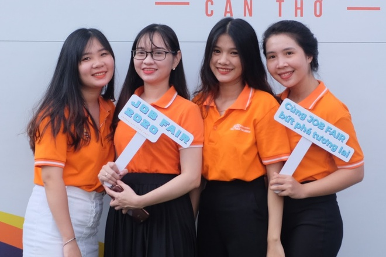

                    <a href="https://caodang.fpt.edu.vn/tin-tuc-poly/so-tay-sinh-vien.html">Ngôi nhà FPT Polytechnic rất tự hào chào đón bạn với tư cách là thành viên của một gia đình lớn. Chúng tôi mong muốn sẽ mang lại cho bạn những trải nghiệm hoàn toàn khác biệt về một môi trường học tập thân thiện với chương trình đào tạo thú vị, mang tính thực tiễn cao.</a>
                </div>
                <div>
                    <h2>Sổ tay sinh viên</h2>
                    
                    <a href="https://luattrongtay.vn/ViewFullText/Id/b5fb8c0f-9401-4597-a263-5f1aa63b8038">Thông tư số 55/2012/TT-BGDĐT ngày 25 tháng 12 năm 2012 của Bộ trưởng Bộ Giáo dục và Đào tạo quy định đào tạo liên thông trình độ cao đẳng, đại học, có hiệu lực kể từ ngày 07 tháng 02 năm 2013, được sửa đổi</a>
                </div>
                <div>
                    <h2>Sổ tay sinh viên</h2>
                    
                    <a href="https://caodang.fpt.edu.vn/tuyen-sinh-cao-dang-xet-tuyen">Với triết lý đào tạo “Thực học – Thực nghiệp”, Cao đẳng FPT Polytechnic hướng tới đào tạo nguồn nhân lực chất lượng cao với phương pháp giảng dạy qua dự án thật</a>
                </div>